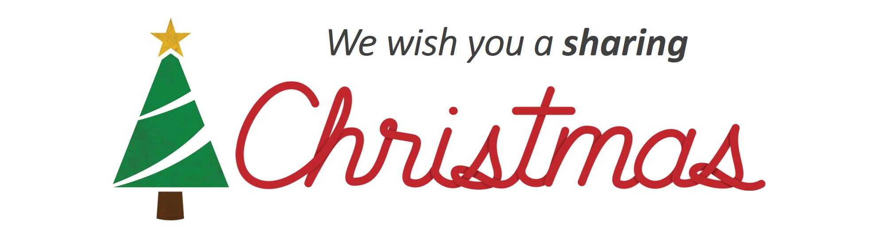

Como podes contribuir? Caso pretendas fazer um donativo monetário, envia por favor a quantia que pretendes por MBWay para a Leonor Madureira (número previamente enviado por email) e na descrição coloca o "nickname" que pretendes que apareça na nossa página inicial.
Podes também contribuir com os seguintes items que nos foram indicados pela CPR como sendo muito precisos:
- Roupa para qualquer idade/ sexo
- Roupa de cama e atoalhados : cobertores, mantas, lençóis, edredons, toalhas;
- Bens para bebés: berços, artigos de puericultura, fraldas, leite infantil, papas, etc;
-
Utensílios de cozinha: tupperwares, panelas, pratos, copos, etc;
-
Produtos de higiene: gel de banho, champô, escovas e pastas de dentes, desodorizantes, pensos higiénicos, etc;
-
Material escolar: máquinas calculadoras, cadernos, lápis, canetas, mochilas, entre outros;
-
Outros: aquecedores.